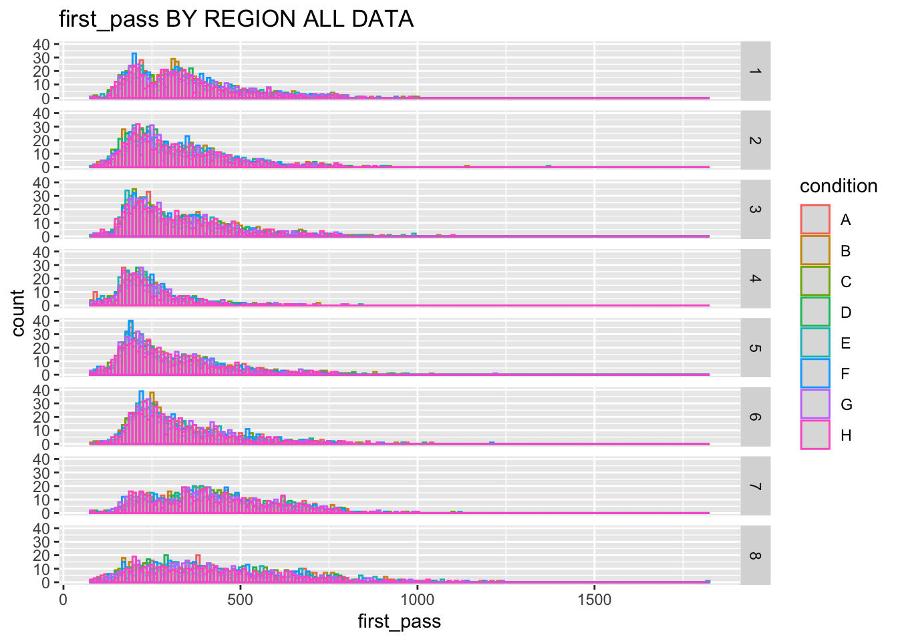

Quick attempt at reproducing some of the analyses from Iria’s thesis (Part II, Chapter 5) to start understanding the data and models a little better
Code
library(dplyr)library(ggplot2)library(brms)relative_path <-'./'#'Dropbox/ch5-analysis-deDiosFlores/'### BRMS settings ###options(mc.cores = parallel::detectCores())chns <-2#brms number of chainsitrs <-1000#brms number of iterations per chain
Data pre-processing
Loading data, selecting relevant columns from Iria’s four individual scripts and renaming according to specifications within [Note that the original scripts use a drop.levels-function. I’m not sure if that’s necessary/which package the function comes from but we could use droplevels frame base-R if necessary –and if it matches what the other function was doing https://www.rdocumentation.org/packages/base/versions/3.6.2/topics/droplevels
Code
df <- readr::read_delim(paste0(relative_path,'IA_report_merged.csv'),delim=';') %>%select(participant, #participant IA_FIRST_RUN_DWELL_TIME, #first_pass IA_REGRESSION_PATH_DURATION, IA_DWELL_TIME, IA_REGRESSION_OUT, #reg_out (1/0 first pass regression out) IA_REGRESSION_OUT_FULL, #reg_out_full (1/0 all regressions out) IA_ID, #region X__TRIAL_INDEX__1, #presentation_order from 1 to 240. BLOCK_INDEX, #real block order experiment, #control, modo or filler list, #from 1 to 8; modo is 1-4/5-8 item, #iten identifier control->1-96;modo->101,148; fillers->201-296 condition, #1-4;A-H; fillers.. grammatical, #grammaticla or ungrammatical control, #subject or object distractor, #match or mismatch infinitive, #ser or estar verb, #control verb adj_gender, #masc or fem Working.memory.capacity, #from 0 to 6 Partial.credit.unit.scoring,#titus said more informative rating, #results from acceptability NP1_gender, #gender of the NP1 NP2_gender,#gender of the NP2 NP1_NP2_gender, #gender combination (e.g. fem_masc) Nchar, #number of characters of the region (including spaces) NP_freq, #frequency of the NPs (if region=1, then NP1, if region=3, then NP2) NP_mean_age,#mena age of the NPs (if region=1, then NP1, if region=3, then NP2) freq_guipuzkoa,#frequency for the NPs in Guipuzkoa(if region=1, then NP1, if region=3, then NP2) verb_n_arg,#number of arguments for the control verbs verb_oind_freq,#frquency of presence of indirec objects with the verbs control_verb_recoded, #categories from 1 to 12 for subject and object control verbs (attributed alphabetically) control_preferences) %>%rename(first_pass ='IA_FIRST_RUN_DWELL_TIME',go_past ='IA_REGRESSION_PATH_DURATION',total_time ='IA_DWELL_TIME',reg_out ='IA_REGRESSION_OUT',reg_out_full ='IA_REGRESSION_OUT_FULL',region ='IA_ID',presentation_order ='X__TRIAL_INDEX__1',block_order ='BLOCK_INDEX',item_identifier ='item',memory ='Working.memory.capacity',memory_pcu ='Partial.credit.unit.scoring',control_verb ='verb')
New names:
Rows: 57600 Columns: 161
── Column specification
──────────────────────────────────────────────────────── Delimiter: ";" chr
(111): verb, condition, EYE_USED, IA_AVERAGE_FIX_PUPIL_SIZE, IA_DWELL_TI... dbl
(50): ...1, X.1, X, item, IA_ID, participant, IA_AREA, IA_BOTTOM, IA_DW...
ℹ Use `spec()` to retrieve the full column specification for this data. ℹ
Specify the column types or set `show_col_types = FALSE` to quiet this message.
• `` -> `...1`
Select relevant data and transform
There are three possible values in the experiment-column. I get what FILLER is but what is modo vs. control?
Code
df_exp <- df %>%filter(experiment =='control') df_exp <- df_exp %>%mutate(region=as.factor(region),participant=as.factor(participant),block_order=as.factor(block_order),list=as.factor(list),item_identifier=as.factor(item_identifier),condition=as.factor(condition),experiment=as.factor(experiment),grammatical=as.factor(grammatical),control=as.factor(control),distractor=as.factor(distractor),infinitive=as.factor(infinitive),adj_gender=as.factor(adj_gender) )#Revel factor CONTROL so that first subject levels(df_exp$control)
#Check distribution of manipulations per list (selecting only region 1 for clarity)data_region=df_exp[df_exp$region==1,]table(data_region$list, data_region$NP1_gender)table(data_region$list, data_region$NP2_gender)table(data_region$list, data_region$NP1_NP2_gender)table(data_region$list, data_region$adj_gender)table(data_region$list, data_region$infinitive)table(data_region$list, data_region$participant)table(data_region$list, data_region$condition)
Filtering
Removing participants 1 (memory scores) and 11 (accuracy)
#Delete NA values: (if there is no fixation there cannot be reg_out)df_rout <-filter(df_exp, reg_out !=".", reg_out_full !=".")paste0('Removing ', nrow(df_exp) -nrow(df_rout), ' rows where reg_out or reg_out_full are NA')
[1] "Removing 3509 rows where reg_out or reg_out_full are NA"
I take it that the number of rows removed –3509– for each of the four is OK?
First pass
Code
df_analysis <- df_fpass
Visualization
Code
ggplot(df_fpass, aes(x=first_pass, col=condition))+geom_histogram( fill="grey", binwidth=10, alpha=.3, position="identity")+facet_grid(region ~ .)+labs(title="first_pass BY REGION ALL DATA")

Code
df_fpass$log <-log(df_fpass$first_pass)ggplot(df_fpass, aes(x=log, col=condition))+geom_histogram( fill="grey", binwidth=.01, alpha=.3, position="identity")+facet_grid(region ~ .)+labs(title="LOG first_pass BY REGION ALL DATA")
condition region x
1 A 1 334.9811
2 B 1 330.2619
3 C 1 333.0167
4 D 1 339.7312
5 E 1 335.4944
6 F 1 338.7092
7 G 1 340.8545
8 H 1 329.8308
9 A 2 306.1299
10 B 2 306.4256
11 C 2 311.4407
12 D 2 302.1701
13 E 2 313.5141
14 F 2 310.7430
15 G 2 312.0301
16 H 2 310.3397
17 A 3 311.5019
18 B 3 325.7322
19 C 3 316.4730
20 D 3 319.8373
21 E 3 303.3545
22 F 3 307.6873
23 G 3 318.6063
24 H 3 317.0593
25 A 4 245.0210
26 B 4 239.8080
27 C 4 250.1859
28 D 4 238.8349
29 E 4 245.1347
30 F 4 246.8344
31 G 4 243.4854
32 H 4 246.3696
33 A 5 297.0429
34 B 5 304.5775
35 C 5 298.1841
36 D 5 284.7782
37 E 5 297.7958
38 F 5 296.4457
39 G 5 296.0875
40 H 5 299.4057
41 A 6 321.2114
42 B 6 311.1683
43 C 6 318.7708
44 D 6 323.0571
45 E 6 315.2263
46 F 6 325.4159
47 G 6 322.3051
48 H 6 320.9338
49 A 7 421.6078
50 B 7 413.2510
51 C 7 408.6836
52 D 7 431.7418
53 E 7 405.8411
54 F 7 416.3327
55 G 7 416.3433
56 H 7 421.1404
57 A 8 401.6878
58 B 8 417.2869
59 C 8 409.5491
60 D 8 413.6168
61 E 8 421.6781
62 F 8 419.8485
63 G 8 411.2303
64 H 8 417.8216
Transforming variables (centering)
I am assuming that we’re centering by subtracting the mean (centering.variable.fnc in the original). We could also standardize by dividing by the SD, since we’re at it. Note also that there are many NAs in NP_freq; freq_guipuzkoa and NP_mean_age so their centering just produces NAs for now.
I see that the original call has boxcox = T but I am not sure if that’s a Box-Cox transformation of the dependent variable (what you would get if you do, e.g., MASS::MASS::boxcox(lm(data = region3,formula = first_pass ~ 1)) or if it’s a Box-Cox regression. Is the idea to get a more normally-distributed dependent variable? If so, then I think a log-transformation (log(region3$first_pass)) already does a nice job but let’s discuss this.